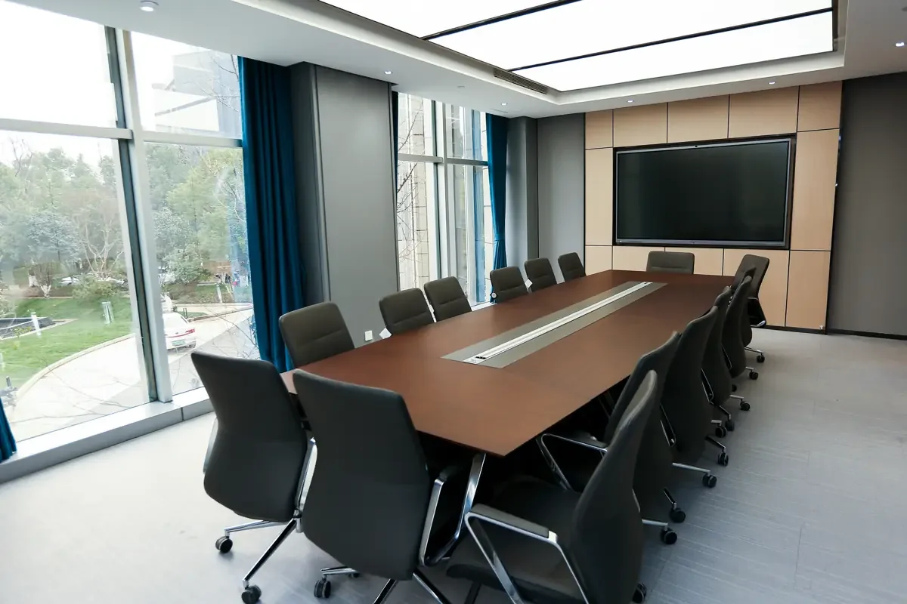

换监理合作单位：项目、人员、款项与档案怎样交接
区分后续业务合作与在建项目交接，先盘点合同、款项、人员和档案，再安排衔接时间与责任分工。
阅读专题从首次接洽、协议签订到项目交接，按正在遇到的问题查找。

区分后续业务合作与在建项目交接，先盘点合同、款项、人员和档案，再安排衔接时间与责任分工。
阅读专题按接洽、资料互换、方案确认、协议签订和项目导入五步推进，附初次沟通材料清单。
从项目报备到结项，整理十个常见办理节点，帮助团队与总部确认材料和办理时间。
按服务范围、交付成果、人员配置和费用计算四项，梳理全过程工程咨询合作方案。
面向会展、医院、院校与TOD项目，从相近技术条件、专业团队、服务周期和界面管理比较合作方案。